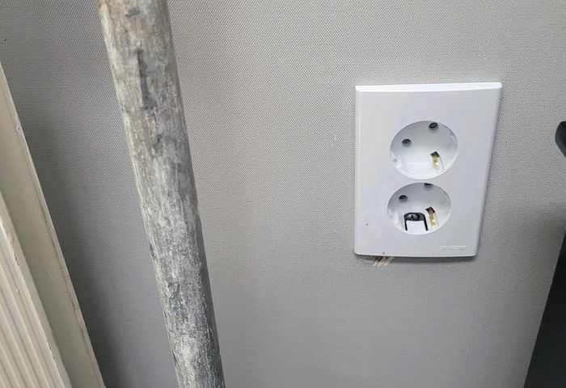
01멀티탭이 아니라 회로를 봅니다
콘센트가 모자란 건 대부분 회로가 모자란 것입니다. 기존 배선이 어디까지 감당하는지 먼저 확인해 늘려도 되는 자리인지 판단합니다.
멀티탭이 늘어나는 건 콘센트가 아니라 회로가 모자라다는 신호입니다. 기존 배선이 어디까지 감당하는지 먼저 확인한 뒤, 그 집에 맞는 자리와 방식만 골라 시공합니다.
현장을 보고, 필요한 만큼만 시공합니다
콘센트를 늘리는 일은 벽을 뚫는 일이 아니라, 전기를 어디서 어떻게 끌고 올지 정하는 일입니다.

01콘센트가 모자란 건 대부분 회로가 모자란 것입니다. 기존 배선이 어디까지 감당하는지 먼저 확인해 늘려도 되는 자리인지 판단합니다.
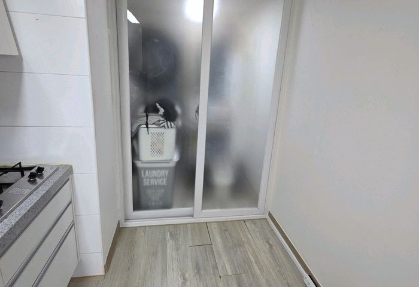
02기존 배선 연장, 몰딩·걸레받이 활용까지 먼저 검토합니다. 타공이 필요하면 분진을 집진하며 작업합니다.
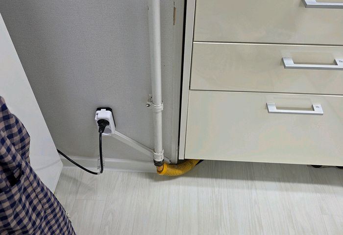
03변색되거나 헐거워진 콘센트는 과열 흔적일 수 있습니다. 증설하러 가서 발견되면 반드시 알려드립니다.
콘센트가 필요한 이유가 다르면, 자리와 제품과 회로도 달라야 합니다.
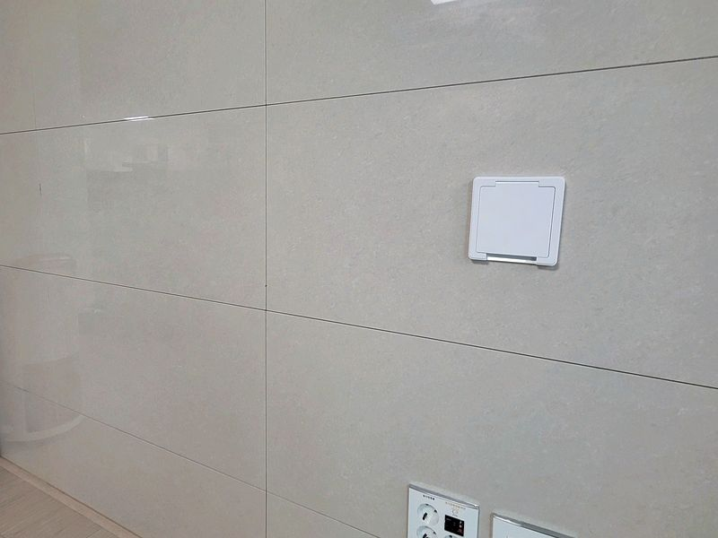
무타공 우선 · 매입형 가능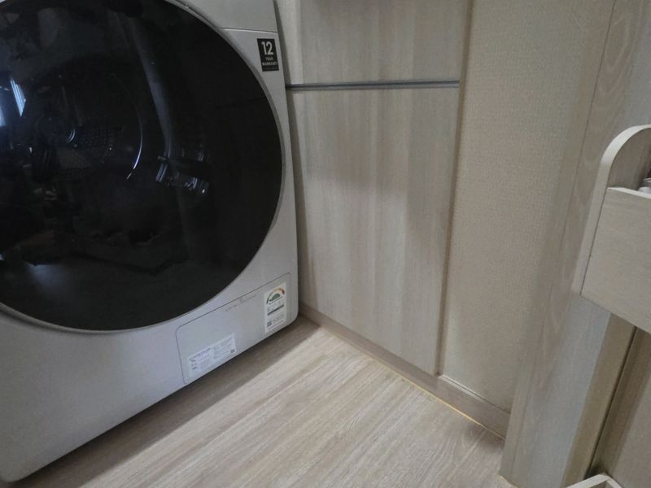
전용 회로 · 방수 마감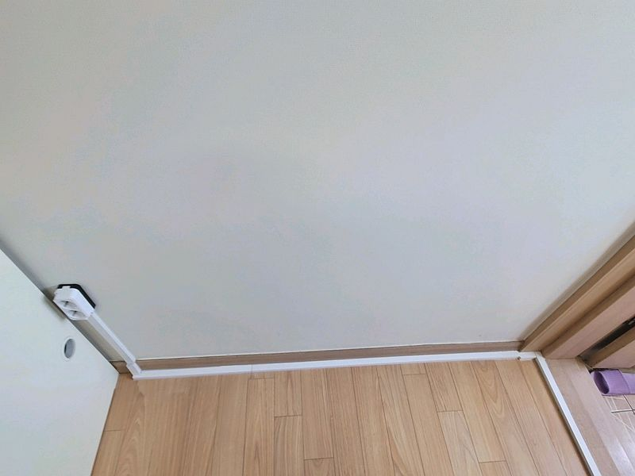
벽걸이 대응 · 선 은폐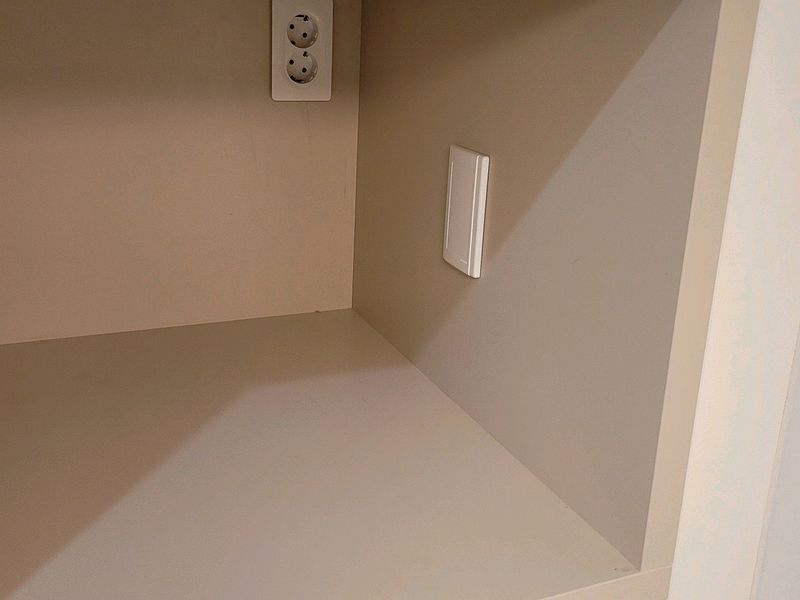
붙박이 뒤 콘센트 이설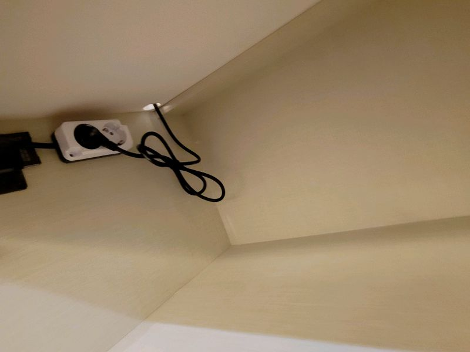
문틀 피해 배선 · 회로 분리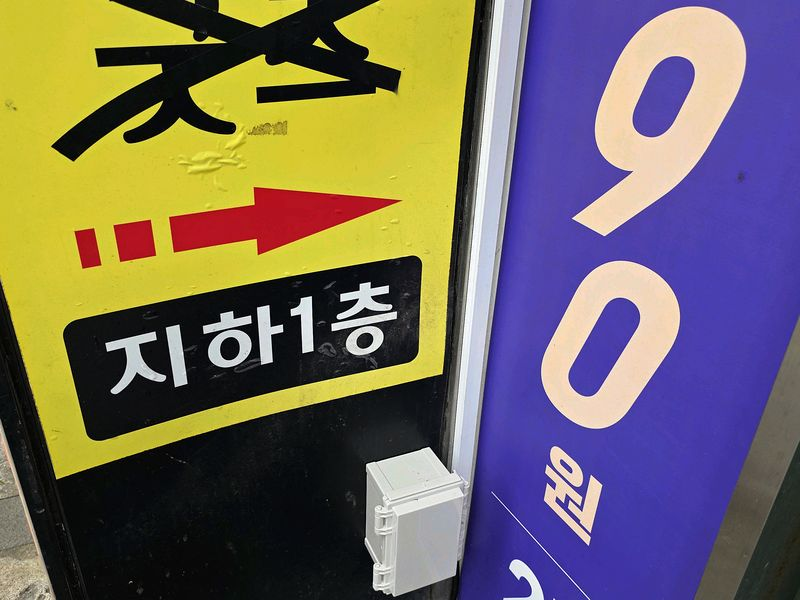
방수형 · 배선관 보호불필요한 절차 없이, 정확한 판단에 필요한 단계만 거칩니다.
설치할 벽면 사진과 놓으실 가전을 문자로 보내주시면 1차로 방식을 검토합니다.
방문 후에는 최대한 현장 상황과 조건에 맞게 시공해 드립니다. 어디에 무엇을 놓으실 건지 먼저 여쭤보고, 그 자리에 맞는 방법을 함께 정합니다.
자리와 구 수를 함께 정한 뒤 보양하고 작업합니다. 분진까지 정리해 드립니다.
전원을 넣어 실제로 들어오는지, 발열이나 이상은 없는지 함께 점검한 뒤 마칩니다.
같은 콘센트라도 어느 회로에서 끌어와 어느 높이에 다는지에 따라 쓰는 느낌과 안전이 완전히 달라집니다.
튼튼전기 시공 원칙지역 이름을 누르면 해당 지역 콘센트 추가설치 안내로 이동합니다.
목록에 없는 지역이어도 먼저 연락 주세요. 거리와 일정에 따라 방문 가능한 경우가 많습니다.
주방과 베란다, 드레스룸부터 마당까지 — 공간별 시공 전후를 정리했습니다.
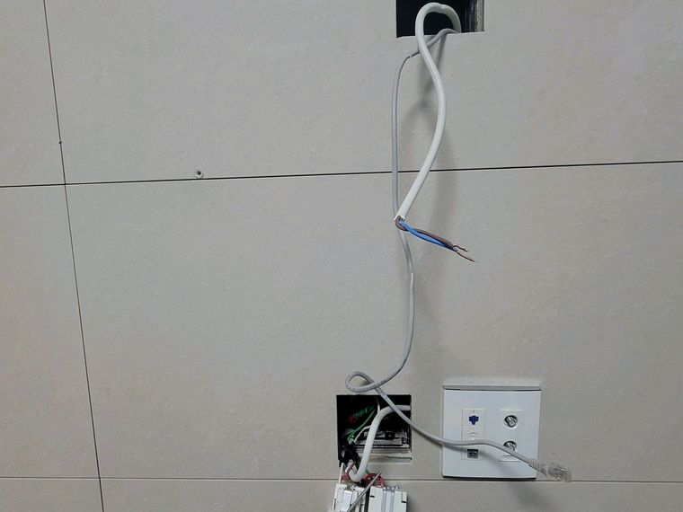
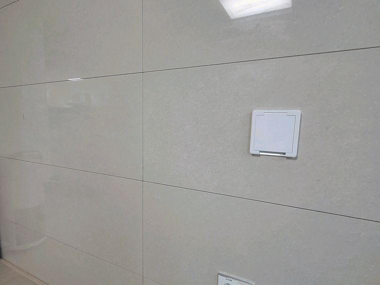
타일 벽 안쪽으로 배선을 끌어와 조리대 위에 2구를 새로 냈습니다. 시공 전 사진처럼 벽에서 전선만 나와 있던 자리라, 결선을 정리하고 매입 박스를 넣은 뒤 커버로 마감했습니다. 주방 조리대 콘센트 추가설치는 타일을 최소한만 건드리는 것이 핵심입니다. 타일은 한 번 깨지면 같은 제품을 구하기 어려워 원상복구가 사실상 안 되기 때문에, 줄눈 위치를 기준으로 타공 자리를 먼저 잡습니다. 전자레인지와 에어프라이어, 전기밥솥을 한자리에서 쓰시던 집이라 한 자리에 부하가 몰리면 차단기가 내려갑니다. 기존 배선 중 여유가 있는 쪽을 찾아 연결했습니다. 주방 조리대 콘센트 추가설치를 문의하실 때 어떤 가전을 몇 개 쓰실 건지 알려주시면 구 수와 회로를 거기에 맞춰 잡아 드립니다. 작업은 분진을 집진하면서 진행했고 끝난 뒤 주변을 닦아 정리했습니다. 주방 조리대 콘센트 추가설치 후에는 전원을 넣어 실제로 가전을 꽂아 보고 발열이 없는지 함께 확인하는 것으로 마무리했습니다.
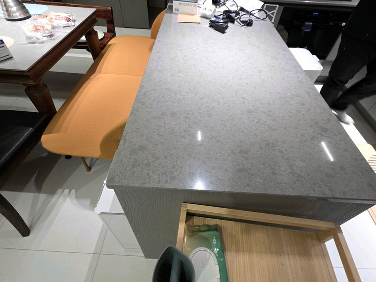
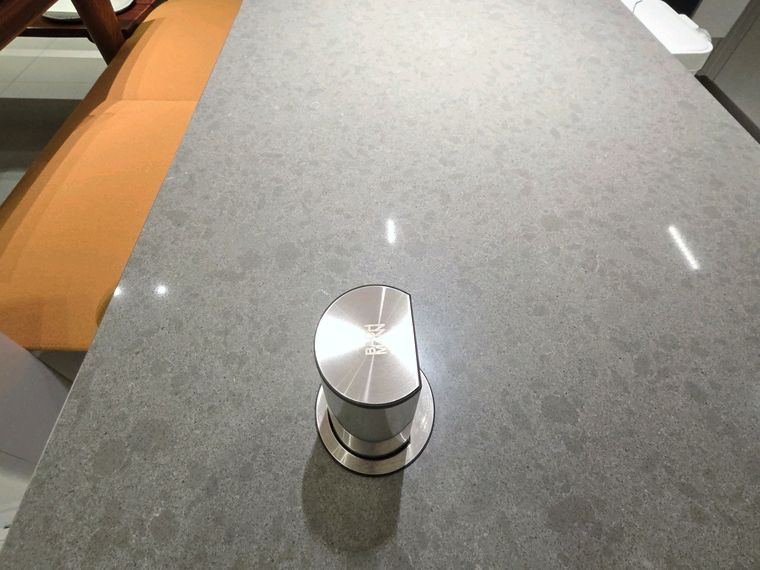
아일랜드 상판에 매입형 팝업 콘센트를 넣었습니다. 쓰지 않을 때는 상판과 같은 높이로 내려가 있다가, 눌러서 올리면 콘센트가 나오는 방식입니다. 주방 아일랜드 콘센트 추가설치가 까다로운 이유는 배선이 벽이 아니라 바닥을 타고 상판까지 올라와야 하기 때문입니다. 하부장 안쪽 경로를 먼저 확인하고, 상판에 구멍을 내기 전에 아래에서 선이 올라올 자리가 확보되는지부터 봅니다. 이 집은 전기포트와 커피머신을 아일랜드에 상시로 두고 쓰셔서, 조리 중에 선이 걸리지 않는 위치를 함께 정했습니다. 상판이 인조대리석이라 타공할 때 열이 오르면 변색될 수 있어 속도를 낮춰 천천히 작업했습니다. 주방 아일랜드 콘센트 추가설치는 상판 재질과 하부장 구조를 봐야 방법이 정해지므로 방문해서 확인한 뒤 안내드립니다. 팝업형 대신 측면 매입형으로 넣는 방법도 있어, 두 가지를 보여드리고 고르시게 했습니다. 주방 아일랜드 콘센트 추가설치 후 실제로 가전을 올려 놓고 선 길이가 충분한지까지 확인했습니다.
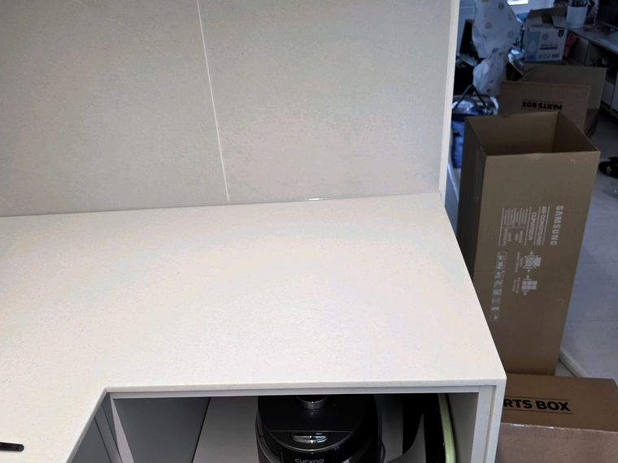
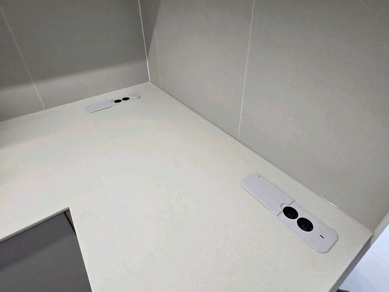
세탁기 자리 옆 타일 벽에 2구를 새로 냈습니다. 시공 전에는 세탁기 자리에 콘센트가 하나뿐이라 건조기를 들이면 꽂을 데가 없는 상태였습니다. 베란다 세탁기 콘센트 추가설치에서 가장 먼저 보는 것은 기존 배선입니다. 건조기는 소비 전력이 커서 세탁기와 한 콘센트를 나눠 쓰면 차단기가 내려가거나 열이 오릅니다. 세탁기와 다른 쪽 배선에서 끌어와 한 자리에 몰리지 않게 했습니다. 베란다는 습기가 많은 공간이라 제품 선택도 달라집니다. 일반 콘센트 대신 커버가 있는 형태를 쓰고, 바닥에서 충분히 띄워 물이 튀어도 닿지 않는 높이에 잡았습니다. 세탁기를 밀어 넣었을 때 플러그가 벽에 눌리지 않도록 위치도 옆으로 비켜 두었습니다. 베란다 세탁기 콘센트 추가설치를 생각하고 계시면 세탁기와 건조기를 나란히 놓을지 위아래로 쌓을지 미리 알려주세요. 배치에 따라 콘센트 높이가 완전히 달라집니다. 베란다 세탁기 콘센트 추가설치를 마친 뒤에는 세탁기와 건조기를 동시에 돌려 보고 차단기가 버티는지, 플러그 쪽에 열이 오르지는 않는지 함께 확인했습니다.
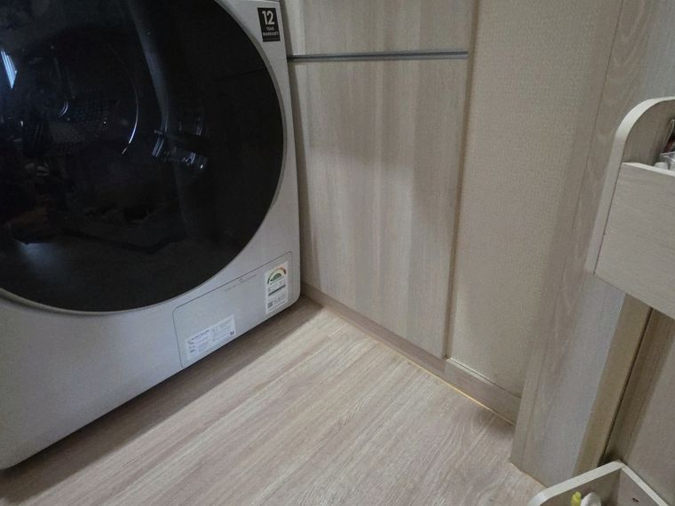
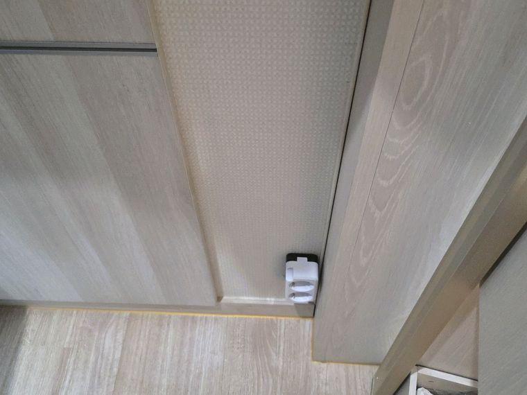
세탁기 뒤편 벽에 콘센트를 새로 내고 배선을 상부장 아래로 숨겼습니다. 시공 전에는 세탁기가 콘센트를 완전히 가리고 있어서 플러그를 뽑으려면 세탁기를 끌어내야 하는 상태였습니다. 다용도실 세탁기 콘센트 추가설치에서 자주 놓치는 부분이 바로 이 높이입니다. 세탁기 뒤 낮은 자리에 콘센트가 있으면 플러그가 벽에 눌려 접촉이 헐거워지고, 헐거워진 상태로 오래 쓰면 열이 납니다. 세탁기 상단보다 높은 자리로 올려 잡았습니다. 상부장이 있는 구조라 배선을 장 아래 그림자 지는 쪽으로 붙여 눈에 띄지 않게 정리했습니다. 벽을 새로 파지 않고 기존 배선을 연장하는 방식으로 끝내 마감재를 거의 건드리지 않았습니다. 다용도실 세탁기 콘센트 추가설치는 세탁기를 빼내야 작업이 가능하므로, 방문 전에 주변 짐을 조금 치워 주시면 시간이 훨씬 줄어듭니다. 다용도실 세탁기 콘센트 추가설치가 끝난 뒤 세탁기를 원래 자리로 밀어 넣고 플러그가 눌리지 않는지, 문이 정상적으로 닫히는지까지 보고 마무리했습니다.
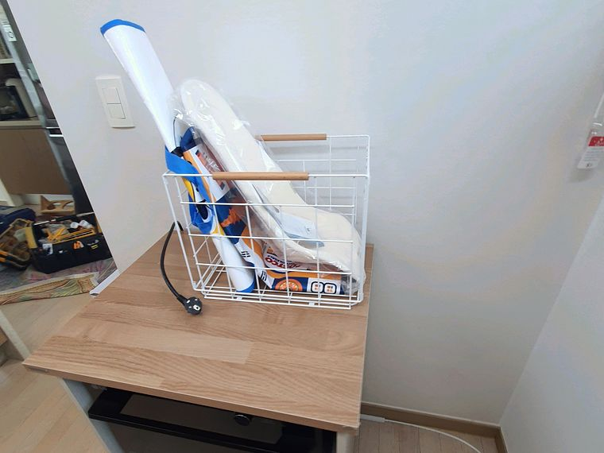
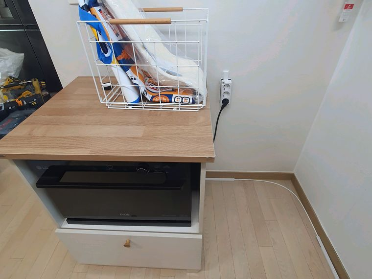
작업대 옆 벽면에 콘센트를 추가하고 선을 벽을 따라 정리했습니다. 시공 전에는 멀티탭을 선반 위에 올려 두고 선이 아래로 늘어져 있었습니다. 다용도실 선반 콘센트 추가설치를 하실 때는 선반 높이를 먼저 정해야 합니다. 선반보다 낮게 잡으면 물건을 올렸을 때 가려지고, 너무 높으면 플러그 무게로 선이 처집니다. 이 집은 선반 바로 아래 손이 닿는 높이로 잡았습니다. 다용도실은 세탁 가전과 청소기, 제습기가 한꺼번에 몰리는 공간이라 콘센트 하나로는 늘 모자랍니다. 실제로 쓰시는 기기 수를 먼저 세어 보고 구 수를 정했습니다. 벽을 타고 내려오는 배선은 몰드로 감싸 마감했습니다. 다용도실 선반 콘센트 추가설치처럼 짧은 구간은 벽을 파는 것보다 몰드로 처리하는 편이 깔끔하고 나중에 손보기도 쉽습니다. 다용도실 선반 콘센트 추가설치를 마치고 실제로 제습기와 청소기를 동시에 꽂아 확인한 뒤, 몰드 색이 벽과 어울리는지도 함께 보시게 했습니다.
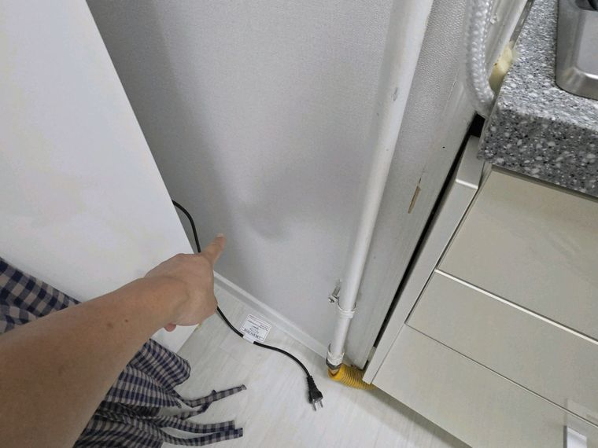
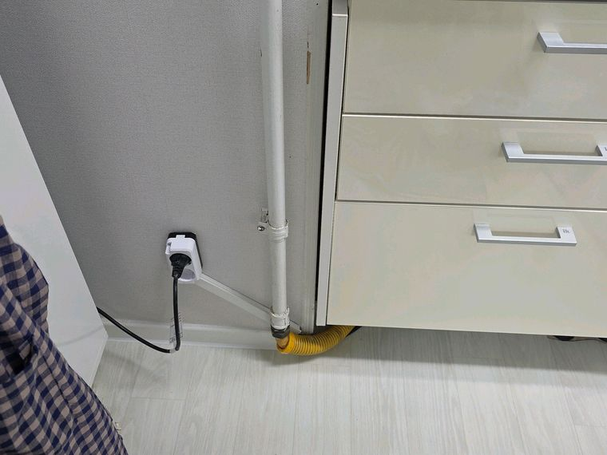
화장대 옆 벽에 콘센트를 새로 내고 늘어져 있던 선을 정리했습니다. 시공 전 사진을 보시면 벽을 타고 전선이 그대로 내려와 있는데, 드라이어와 고데기를 쓰려고 다른 방에서 선을 끌어온 상태였습니다. 안방 화장대 콘센트 추가설치에서 중요한 건 높이입니다. 드라이어처럼 자주 꽂았다 뺐다 하는 가전은 허리를 굽히지 않아도 되는 높이에 있어야 편하고, 선이 화장대 위로 넘어오지 않습니다. 상판보다 조금 위쪽으로 잡았습니다. 드라이어와 고데기는 순간 전력이 큰 편이라 조명 쪽에 물리면 불이 깜빡이는 일이 생깁니다. 조명과 겹치지 않는 콘센트 배선에서 끌어왔습니다. 안방 화장대 콘센트 추가설치는 가구를 놓은 뒤에 하면 가려지기 쉽습니다. 화장대 위치가 정해져 있다면 그 자리를 기준으로 잡아 드리니 방문 전에 알려주세요. 안방 화장대 콘센트 추가설치가 끝난 뒤 드라이어를 켜 놓고 조명이 흔들리지 않는지, 접점에 열이 오르지 않는지 확인하고 정리했습니다.
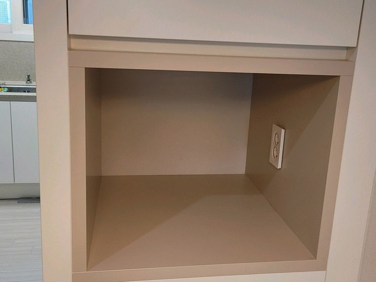
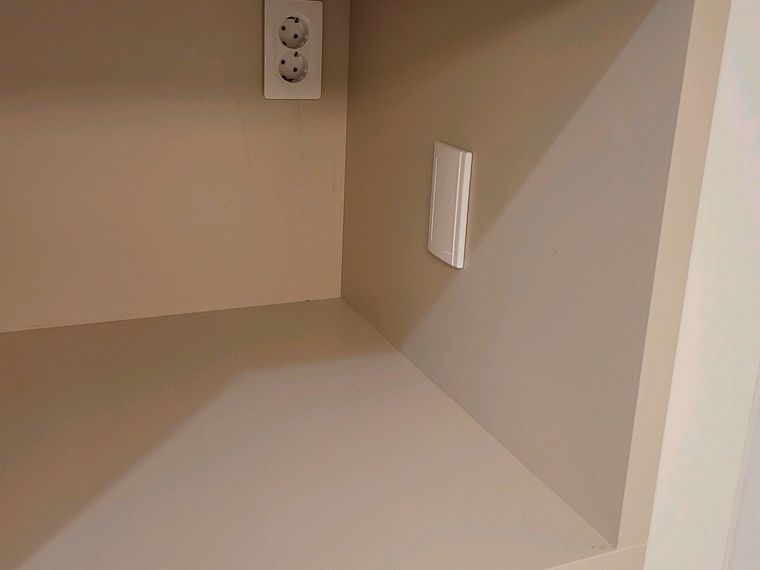
붙박이장 하부 오픈 공간 안쪽 벽에 2구를 새로 냈습니다. 시공 전에는 이 칸에 콘센트가 없어서 무선청소기 거치대를 놓고도 충전을 못 하는 상태였습니다. 붙박이장 콘센트 추가설치는 장을 뜯지 않고 하는 것이 관건입니다. 붙박이장은 현장에서 맞춰 짠 가구라 한 번 분리하면 원래대로 맞추기 어렵습니다. 이 집은 장 뒤쪽 벽의 기존 배선을 찾아 오픈 칸 안쪽으로 짧게 빼내는 방식으로 처리했습니다. 콘센트 자리는 칸 안쪽 옆면에 잡았습니다. 뒷면에 두면 물건을 밀어 넣었을 때 플러그가 눌리고, 바닥에 두면 먼지가 쌓입니다. 옆면이 가장 오래 문제없이 쓰입니다. 붙박이장 콘센트 추가설치를 생각하고 계시면 그 칸에 무엇을 놓으실 건지 알려주세요. 무선청소기인지 공유기인지 제습기인지에 따라 높이와 구 수가 달라집니다. 붙박이장 콘센트 추가설치를 마친 뒤 청소기 거치대를 실제로 넣어 보고 문이 걸리지 않는지, 선이 접히지 않는지까지 확인했습니다.
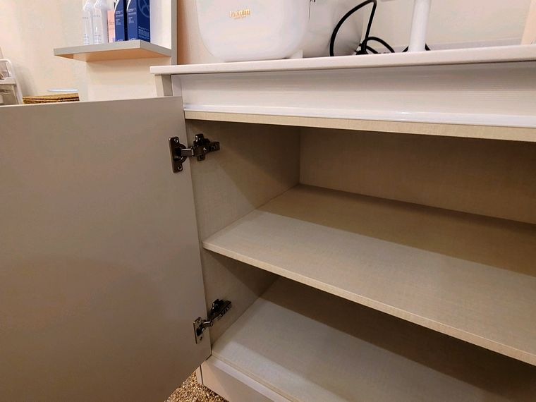
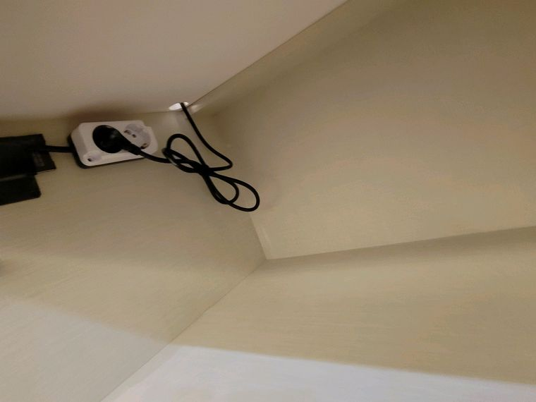
신발장 안쪽에 콘센트를 넣어 신발 건조기를 쓸 수 있게 했습니다. 시공 전에는 신발장 안에 전기가 아예 들어오지 않아 현관 밖으로 선을 빼서 쓰시던 상황이었습니다. 현관 신발장 콘센트 추가설치에서 먼저 보는 것은 문이 여닫히는 방향입니다. 경첩 쪽에 콘센트를 두면 문을 닫을 때마다 선이 눌려 피복이 상합니다. 이 집은 문이 열리는 반대쪽 측면에 잡았습니다. 신발장 안은 통풍이 잘 안 되는 공간이라 열이 쌓이기 쉽습니다. 신발 건조기나 살균기처럼 계속 켜 두는 기기를 쓰신다면 현관 조명 회로와 겹치지 않게 나눠 잡는 편이 안전합니다. 선반이 있는 구조라 선반 높이를 피해 위치를 정했고, 배선은 신발장 뒷면을 따라 눈에 띄지 않게 넣었습니다. 현관 신발장 콘센트 추가설치는 신발장 구조에 따라 방법이 달라지므로 사진을 먼저 보내 주시면 도움이 됩니다. 현관 신발장 콘센트 추가설치를 마치고 신발 건조기를 넣어 본 뒤, 문을 여닫으며 선이 눌리는 곳이 없는지 함께 확인했습니다.
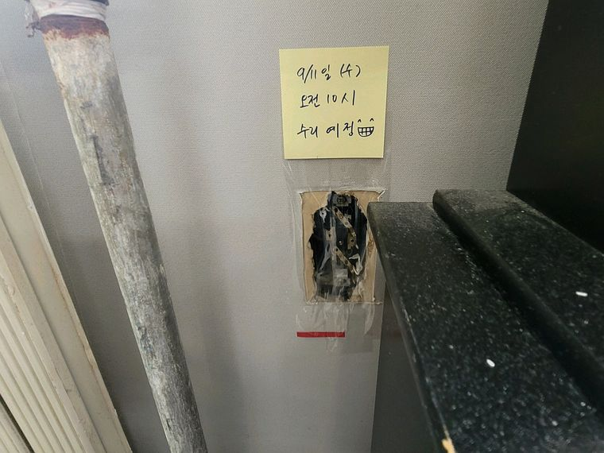
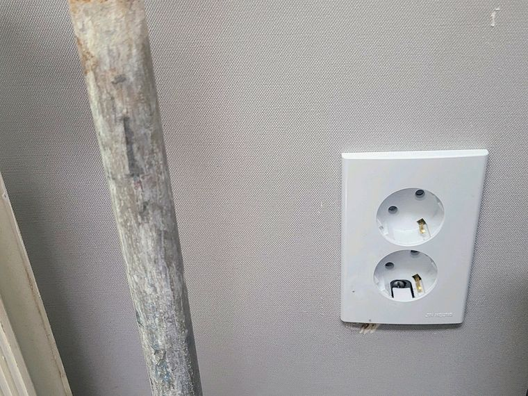
배관이 지나가는 벽에 2구 콘센트를 새로 냈습니다. 시공 전 사진을 보시면 벽에 구멍만 뚫려 전선이 노출된 채 테이프로 막혀 있던 자리입니다. 주방 배관 옆 콘센트 추가설치는 배관과 거리를 두는 것이 원칙입니다. 배관에 결로가 생기면 물방울이 타고 내려와 콘센트 쪽으로 들어갈 수 있어서, 배관에서 충분히 떨어뜨리고 아래가 아닌 옆으로 비켜 잡았습니다. 오래된 집이라 기존 배선 상태부터 확인했습니다. 피복이 삭았거나 접지가 없는 경우가 많은데, 이런 상태에서 콘센트만 새로 달면 겉만 새것이고 안쪽은 그대로입니다. 노출돼 있던 부분을 정리하고 다시 결선했습니다. 주방 배관 옆 콘센트 추가설치처럼 벽 안쪽 상태를 알 수 없는 자리는 열어 봐야 정확한 작업 범위가 나옵니다. 그래서 현장에서 확인한 뒤에 말씀드리고 진행합니다. 주방 배관 옆 콘센트 추가설치를 끝낸 뒤에는 접지가 제대로 잡혔는지 계측기로 확인하고, 노출됐던 자리도 깔끔하게 마감했습니다.
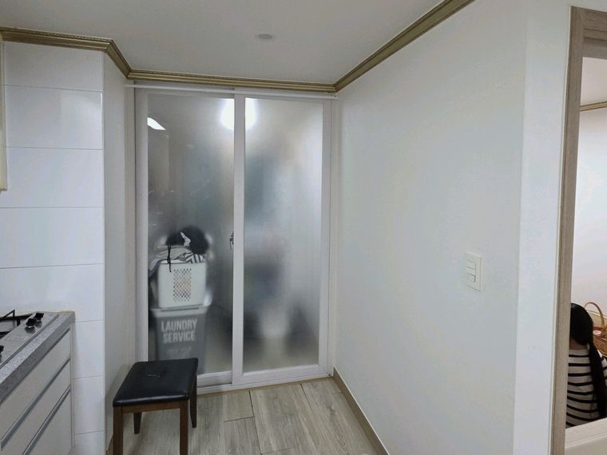
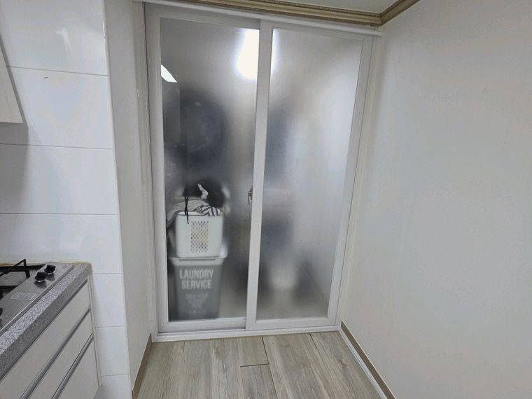
보일러실 벽면에 콘센트를 추가했습니다. 보일러 전용 콘센트 하나만 있던 공간이라 다른 기기를 쓰려면 보일러 플러그를 뽑아야 하는 상태였습니다. 보일러실 콘센트 추가설치에서 가장 중요한 것은 보일러 전원을 건드리지 않는 것입니다. 보일러는 겨울에 멈추면 동파로 이어지기 때문에 보일러 콘센트를 나눠 쓰면 안 됩니다. 보일러와 무관한 다른 배선에서 끌어와 완전히 분리했습니다. 보일러실은 습기와 먼지가 함께 있는 공간입니다. 커버가 달린 형태로 시공해 먼지가 접점에 쌓이지 않게 했고, 바닥에서 띄워 물기가 닿지 않는 높이에 잡았습니다. 보일러실 콘센트 추가설치를 하시면서 조명도 함께 손보시는 분들이 많습니다. 어차피 같은 공간에서 배선을 다루기 때문에 한 번에 하면 시간과 비용 모두 줄어듭니다. 필요하시면 방문했을 때 상태를 함께 봐 드립니다. 보일러실 콘센트 추가설치를 마친 뒤 보일러를 껐다 켜서 정상 작동하는지, 새 회로가 보일러에 영향을 주지 않는지 확인했습니다.
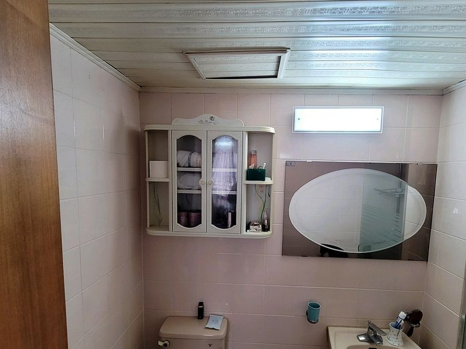
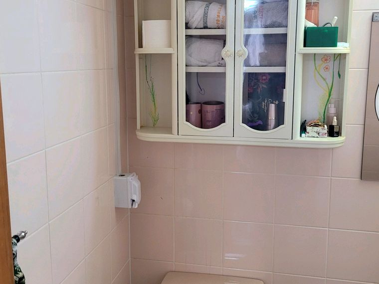
욕실 문 바깥쪽 벽에 콘센트를 추가했습니다. 드라이어를 쓰려고 방에서 선을 끌어와 문틈으로 넘기시던 상황이었습니다. 욕실 앞 콘센트 추가설치는 위치를 정하는 것이 절반입니다. 욕실 안쪽은 습기 때문에 일반 콘센트를 두면 안 되고, 문 바깥쪽이라도 문을 열었을 때 수증기가 직접 닿는 자리는 피해야 합니다. 세면대에서 옆으로 비켜난 벽에 잡았습니다. 물기 있는 손으로 만질 가능성이 있는 자리라 누전차단기가 정상인지 먼저 확인했습니다. 오래된 집은 차단기가 있어도 동작하지 않는 경우가 있어, 실제로 시험 버튼을 눌러 떨어지는지 보고 진행합니다. 욕실 앞 콘센트 추가설치는 안전과 직결되는 작업이라 접지가 살아 있는지도 함께 봅니다. 접지가 없는 집이면 그 부분부터 어떻게 할지 말씀드린 뒤에 진행합니다. 욕실 앞 콘센트 추가설치를 마친 뒤 누전차단기 시험 버튼을 다시 눌러 정상 동작하는 것까지 보시게 하고 마무리했습니다.
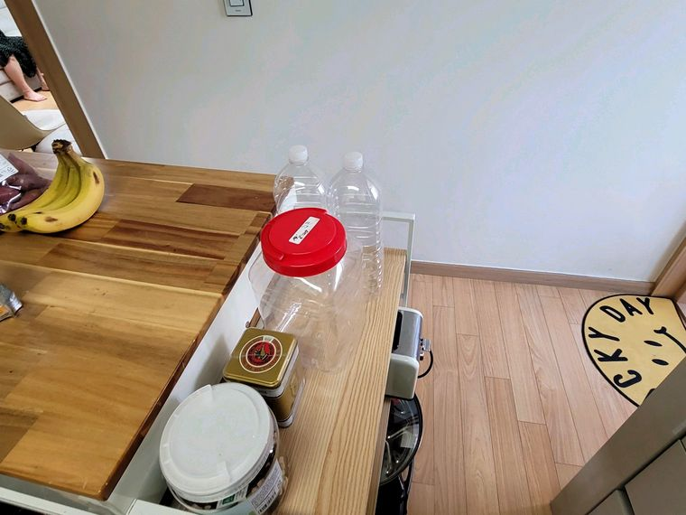
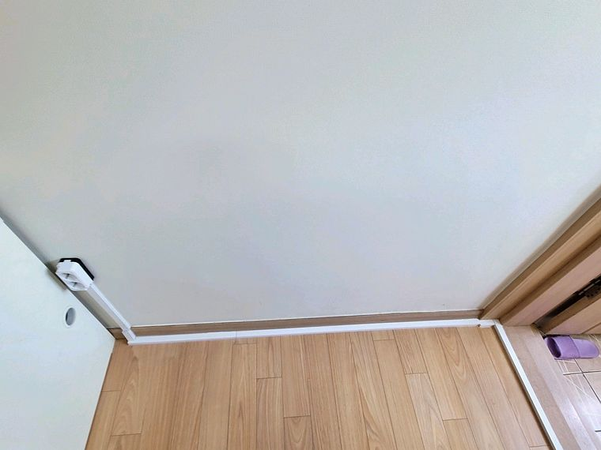
거실 벽 하단에 콘센트를 새로 내고 걸레받이를 따라 배선을 정리했습니다. 시공 전에는 식탁 쪽 벽에만 콘센트가 있어서 거실 반대편에서는 멀티탭을 길게 끌어 쓰던 상태였습니다. 거실 벽 콘센트 추가설치에서 자리를 정할 때는 지금 가구 배치만 보면 안 됩니다. 소파나 장식장은 몇 년 안에 자리가 바뀌는 경우가 많아서, 어느 쪽으로 옮겨도 쓸 수 있는 위치를 함께 고민합니다. 벽을 파지 않고 걸레받이 위를 따라 몰드로 배선했습니다. 색을 걸레받이와 맞추면 멀리서는 거의 티가 나지 않고, 벽지를 뜯지 않아 원상복구 걱정도 없습니다. 전세나 월세 집에서 특히 많이 쓰는 방법입니다. 거실 벽 콘센트 추가설치를 문의하실 때 방 구조와 지금 쓰시는 기기를 알려주시면, 벽을 파는 방법과 몰드로 처리하는 방법 중 어느 쪽이 나은지 비교해서 안내드립니다. 거실 벽 콘센트 추가설치가 끝난 뒤 소파를 원래 자리로 옮겨 놓고 가려지는 곳이 없는지, 몰드가 들뜨지 않는지 확인했습니다.
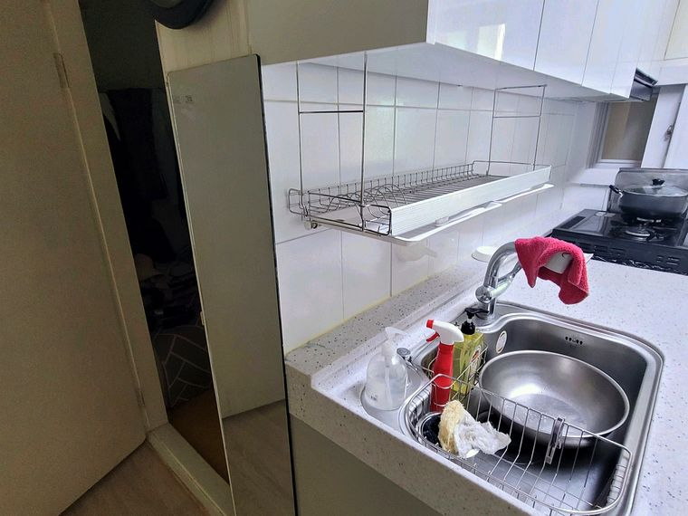
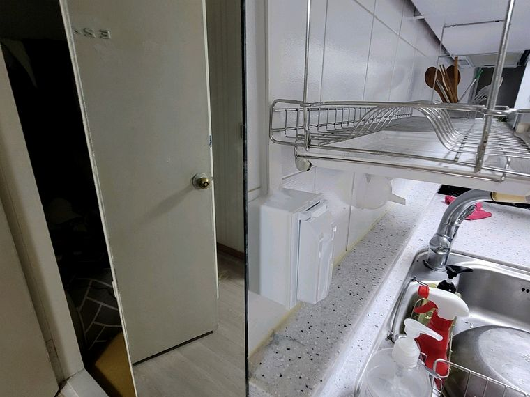
싱크대 옆 벽면에 콘센트를 추가했습니다. 좁은 주방이라 콘센트 하나로 전기밥솥과 전자레인지를 번갈아 꽂아 쓰시던 집입니다. 싱크대 옆 콘센트 추가설치에서 첫 번째 기준은 물입니다. 싱크볼에서 튀는 물이 닿지 않는 거리에 잡아야 하고, 설거지할 때 손이 스치지 않는 높이여야 합니다. 싱크볼에서 충분히 떨어진 벽면 상부에 잡았습니다. 주방은 습기와 기름때가 함께 있는 공간이라 시간이 지나면 접점이 지저분해집니다. 청소하기 쉬운 매끈한 커버 형태로 골랐습니다. 주방 쪽 배선에는 이미 냉장고와 조명이 물려 있어 여유가 없었습니다. 여기에 전자레인지까지 더하면 차단기가 내려가기 때문에 부하가 적은 다른 쪽 배선에서 끌어왔습니다. 싱크대 옆 콘센트 추가설치는 이렇게 기존 배선부터 봐야 제대로 끝납니다. 콘센트 개수만 늘리면 그때뿐이고 같은 문제가 반복됩니다. 싱크대 옆 콘센트 추가설치를 마치고 전자레인지와 밥솥을 동시에 켜서 차단기가 내려가지 않는 것을 함께 확인했습니다.
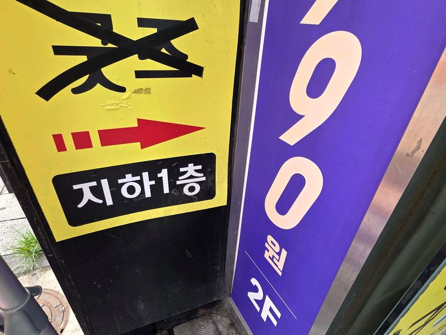
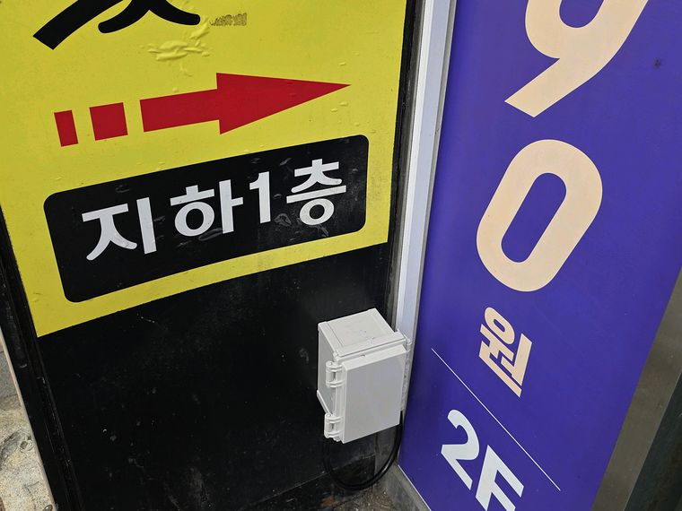
건물 외벽에 방수형 콘센트를 새로 냈습니다. 시공 전에는 외부에 전기를 쓸 자리가 없어 실내에서 창문 틈으로 선을 빼서 쓰던 상태였습니다. 외부 벽 방수 콘센트 추가설치는 실내와 제품부터 다릅니다. 일반 콘센트를 바깥에 달면 빗물이 접점에 들어가 누전으로 이어집니다. 잠금 커버가 달린 방수형을 쓰고, 커버가 아래로 덮이는 방향으로 잡아 빗물이 타고 들어오지 않게 했습니다. 배선은 그냥 노출시키지 않고 관에 넣어 보호했습니다. 자외선에 오래 노출되면 피복이 갈라지기 때문에 외부 배선은 반드시 관 안에 넣어야 오래 갑니다. 높이도 신경 썼습니다. 너무 낮으면 눈이 쌓이거나 빗물이 튀고, 겨울에 얼면 커버가 깨집니다. 지면에서 충분히 띄워 잡았습니다. 외부 벽 방수 콘센트 추가설치를 문의하실 때 무엇을 쓰실 건지 알려주세요. 조명인지 전동공구인지 계절가전인지에 따라 회로와 구 수가 달라집니다. 외부 벽 방수 콘센트 추가설치 후에는 실제로 전원을 넣어 확인하고 커버가 제대로 닫히는지까지 함께 봤습니다.
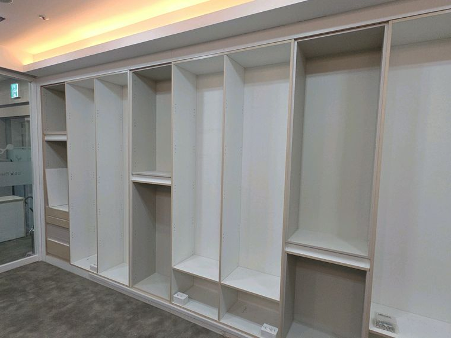
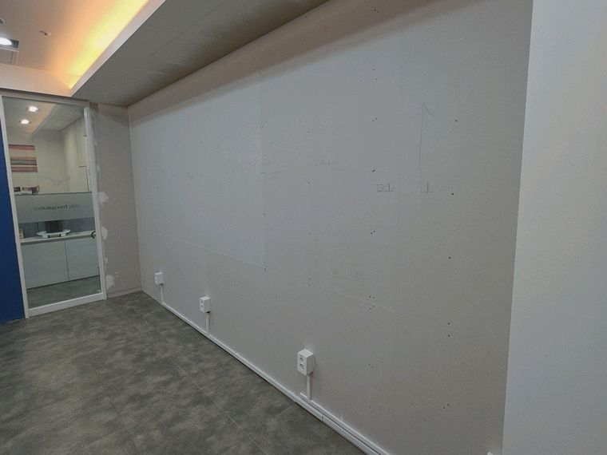
천장과 벽을 따라 배선을 새로 넣고 필요한 자리마다 콘센트를 냈습니다. 시공 전에는 선이 정리되지 않은 채 늘어져 있어 보기에도 좋지 않고 걸릴 위험도 있던 상태였습니다. 벽면 배선 정리 콘센트 추가설치는 경로를 먼저 정하는 일이 절반입니다. 천장 마감선과 벽 모서리를 따라가면 몰드가 구조물처럼 보여서 눈에 잘 띄지 않습니다. 이 현장도 모서리 라인을 그대로 따라 올렸습니다. 콘센트 위치는 실제로 무엇을 놓을지 먼저 듣고 정했습니다. 나중에 배치가 바뀔 여지가 있는 자리는 여유를 두고 잡아, 가구를 옮겨도 못 쓰게 되는 일이 없게 했습니다. 한 곳에서만 전기를 끌어오면 그쪽에 부하가 몰립니다. 기존 배선 상태를 확인하고 여러 자리로 나눠 연결했습니다. 벽면 배선 정리 콘센트 추가설치는 선을 감추는 것뿐 아니라 부하를 나누는 일까지 포함합니다. 마감이 깔끔해도 안쪽이 무리하면 결국 차단기가 내려갑니다. 벽면 배선 정리 콘센트 추가설치를 마친 뒤 모든 자리에 전원을 넣어 확인하고, 몰드가 들뜨는 곳이 없는지 함께 살펴본 뒤 마무리했습니다.
현장을 보고 그 집에 맞는 방법 하나만 골라 깔끔하게 끝냅니다.
입주 예정 · 새 아파트 · 신도시 단지
구축 단지 · 재건축 전 · 1기 신도시
다세대 · 연립 · 오피스텔 · 원룸
단독주택 · 타운하우스 · 복층
개수만으로 정해지지 않습니다. 아래 네 가지가 금액을 가릅니다.
기존 콘센트에서 새 자리까지의 거리입니다. 멀수록 자재와 시간이 늘어나기 때문에 방문하면 이 경로부터 봅니다.
콘크리트·석고·조적 중 무엇이냐에 따라 작업 방식이 달라집니다. 구축 아파트는 무리하게 파지 않고 몰드 배선으로 돌리기도 합니다.
가까운 콘센트에서 전기를 끌어올 여유가 있는지에 따라 범위가 달라집니다. 여유가 없으면 경로를 더 멀리 잡아야 합니다.
일반 2구인지 매입형·방수형·USB 일체형인지에 따라 자재비가 달라집니다. 쓰실 가전을 알려주시면 맞춰 안내드립니다.
전화로 대략적인 범위는 말씀드릴 수 있지만, 확정 금액은 벽과 기존 배선을 직접 본 뒤에 안내드립니다. 현장에서 견적을 보시고 진행하지 않으셔도 괜찮습니다.
공간과 상황에 맞춘 안내를 정리했습니다.
네, 한 자리라도 방문합니다. 다만 이동 거리에 따라 일정이 달라질 수 있어 전화로 지역과 상황을 먼저 알려주시면 조율이 빠릅니다.
벽 구조와 배선 거리, 회로 여유에 따라 달라져 전화만으로 확정하기 어렵습니다. 사진을 보내주시면 방문 전에 대략적인 범위를 안내드리고, 현장에서 조건이 다르면 그 자리에서 설명드린 뒤 결정하시면 됩니다.
필요한 만큼만 건드립니다. 기존 배선을 연장하거나 몰딩·걸레받이를 따라 배선을 숨기는 방법을 먼저 검토하고, 타공이 필요하면 분진을 집진하며 작업합니다.
단지에 따라 작업 가능 시간과 소음 규정이 있습니다. 방문 전에 확인해 드리고 필요하면 협의한 뒤 일정을 잡습니다.
권하지 않습니다. 건조기는 소비 전력이 커서 기존 콘센트를 나눠 쓰면 과열과 차단기 문제가 생깁니다. 회로를 나눌 수 있는지 먼저 확인합니다.
한두 자리 증설은 보통 반나절에서 하루 안에 끝납니다. 배선 경로가 길거나 벽 구조가 까다로우면 더 걸릴 수 있어 현장에서 미리 말씀드립니다.
벽을 타공하는 시공은 집주인의 사전 동의가 필요합니다. 기존 배선을 연장하거나 몰드 배선으로 처리하는 방법도 있어, 상황에 맞춰 함께 안내드립니다.
네, 평일과 주말 모두 08:00~20:00 사이 상담 및 방문이 가능합니다. 편하신 시간에 연락 주세요.